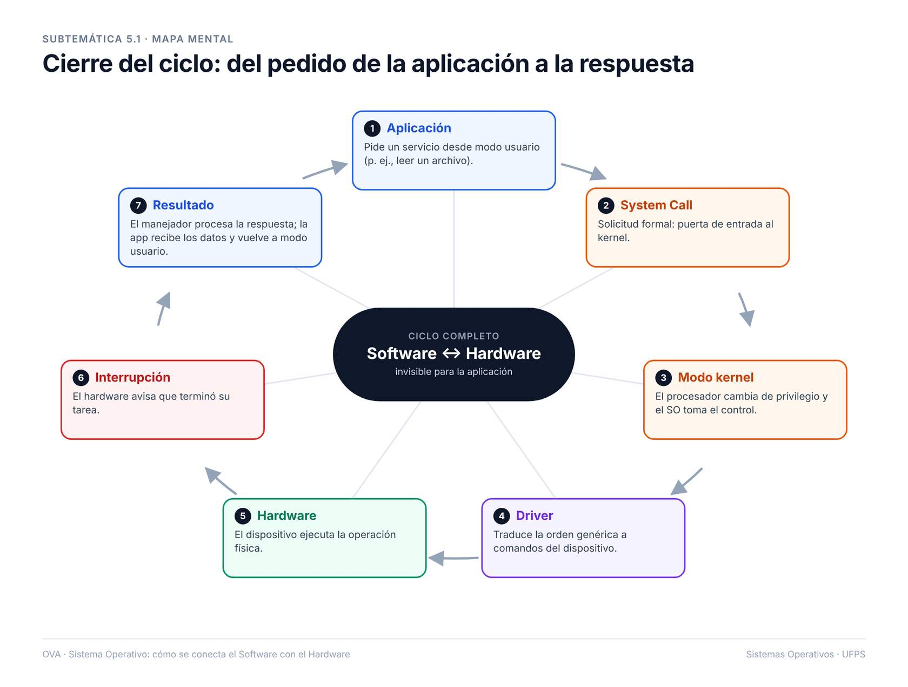

5. Cierre del Ciclo: Respuesta del Hardware al Software

notificación del sistema confirmando que una tarea finalizó con éxito (“Documento guardado” o “Impresión completada”)

mapa mental: resume todo el recorrido.
Una System Call es una interfaz que permite a los programas solicitar servicios al sistema operativo, como acceso a archivos.
Ejemplo: Una aplicación solicita abrir un archivo usando la llamada al sistema 'open()'.
El Modo Kernel es un nivel de privilegio del procesador que permite ejecutar código con acceso completo al hardware.
Ejemplo: El sistema operativo gestiona la memoria en modo kernel para proteger los datos.
Un Driver es un software que permite la comunicación entre el sistema operativo y un dispositivo de hardware.
Ejemplo: El driver de una impresora traduce las instrucciones de impresión para el dispositivo.
Una Interrupción es una señal que indica al procesador que detenga su tarea actual para atender un evento urgente.
Ejemplo: Una tecla presionada genera una interrupción para que el sistema registre la entrada.
Un Manejador de Interrupciones es un programa que responde a una interrupción específica y realiza las acciones necesarias.
Ejemplo: El manejador procesa la señal de un mouse para mover el cursor en pantalla.
El Modo Usuario es un nivel de ejecución restringido donde las aplicaciones operan sin acceso directo al hardware.
Ejemplo: Un navegador web funciona en modo usuario para evitar alterar el sistema operativo.
Haz clic en cada tarjeta para ver la respuesta.
Relaciona cada concepto con su descripción correspondiente.